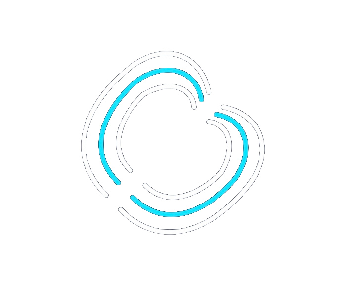

Curing Discovery Friction.
A neuro-symbolic bridge between creative intent and verified cinematic assets.
Latent Intent Analysis
Translating unstructured creative briefs into structural signals.
Contextual Logic Core (SCLC)
The reasoning engine that decouples subjective intent from visual content, mapping requests across four cinematic pillars.
Inference Graph Traversal (URIG)
Querying a high-dimensional property graph to maintain entity persistence and logical causality during discovery.
Narrative Delta Reinforcement
A proprietary human-in-the-loop flywheel allowing users to refine the engine's understanding through iterative correction.
Deterministic Matching
focal
35mm
aperture
f/1.8
motion
kinetic
mood
cold
Surfacing professional physics metadata as a standard discovery moat.
Affiliate Revenue
Monetizing high-intent funnels via referral commissions from premium cinematic libraries like Pond5 and Adobe Stock.
Sovereign Compliance
Native adherence to the 2026 India IT Rules, featuring cryptographic provenance and 3-hour takedown windows.